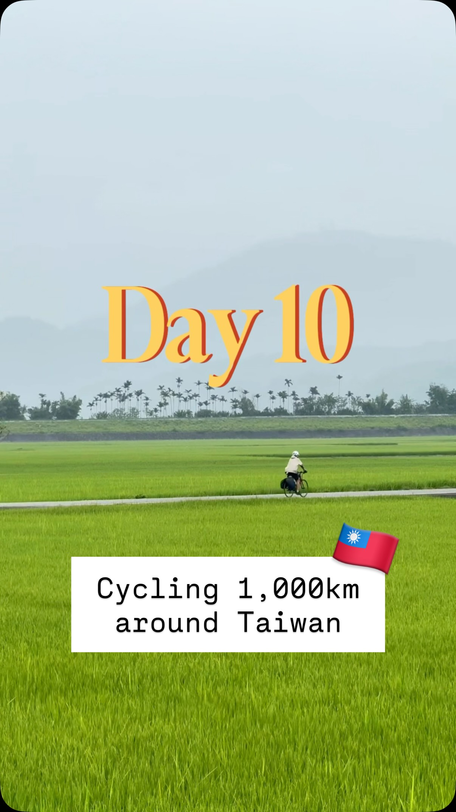
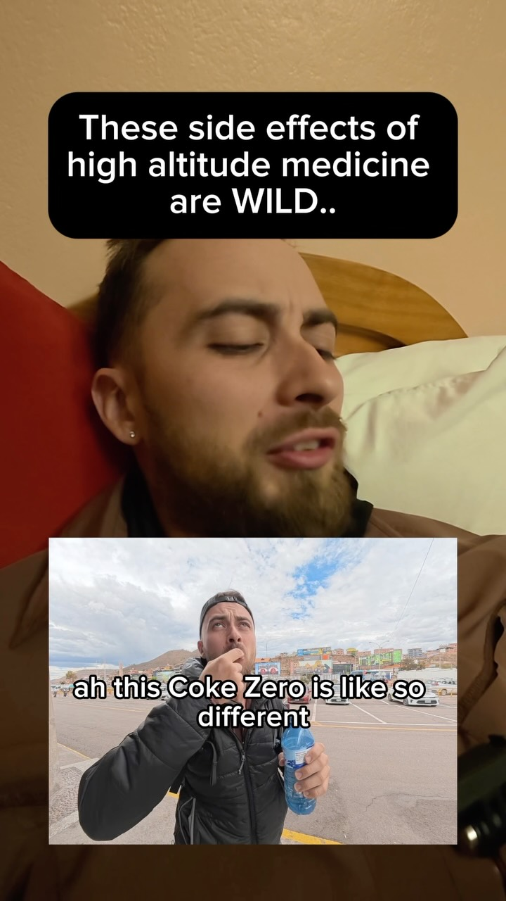
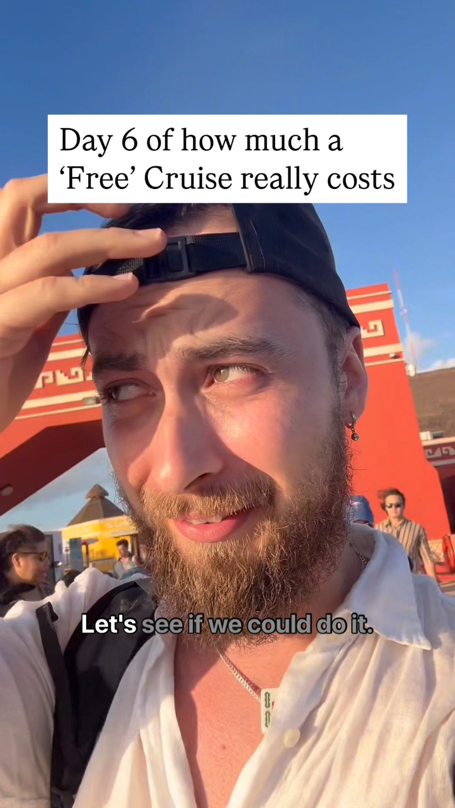

Dennis Catana
Travel-based challenges — filmed for the experience and the people.
I build trips around a dare: long rides, language immersion, salsa floors in new cities, and trails that ask more than a tourist checklist.
35+ countries and counting
Place is the set, not a home base. From cruise ports to Sacred Valley mornings to a 1,000 km loop of Taiwan — the map keeps growing because the next challenge does.



Salsa on the road
Dance is how I meet people when the itinerary ends. Festivals, socials, and “hear the music — drop everything” nights from Jeju to Spain to the cruise dock.
Languages
Words open doors the camera can’t. I speak Romanian at home in my roots, and Chinese when the challenge is immersion — including stretches of Chinese-only days on the road.
-
Chinese 中文
Mandarin for markets, trains, and people — practiced in public and framed as language-immersion challenges, not textbook tourism.
-
Romanian Română
Family language and cultural root — the quieter half of how I move between worlds.
Trails & the adventure side
Long days on foot when the trip asks for it — thru-hikes, high passes, and “can I finish this trail my way” experiments.

Get in touch
Brand partnerships, gear testing, series sponsorships — or just say hi.
denniscatana@me.com